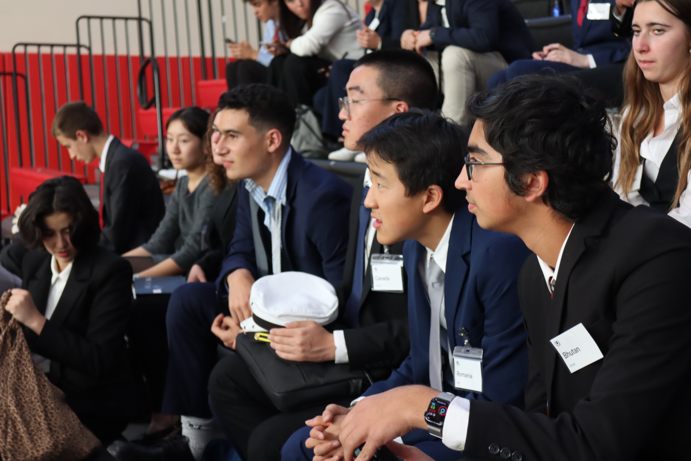
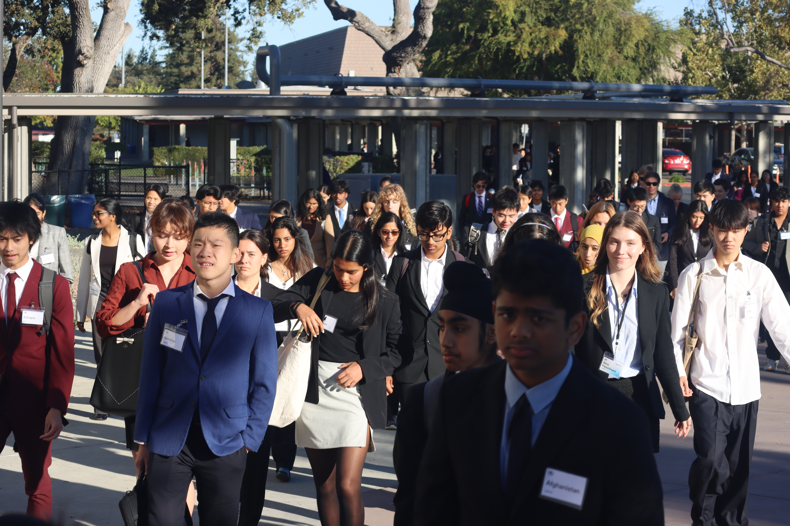

MUN. Gunn Edition.
About GMUNCchevron_right
The Henry M. Gunn Model United Nations Conference is a day-long, student-led high school conference. It is an excellent opportunity for both novice and experienced delegates. Newcomers get a chance to be introduced to the world of MUN, while veteran delegates can sharpen their skills in more advanced crisis, specialized, and ad hoc committees.
Conference Detailschevron_right
GMUNC XIII will take place at Henry M. Gunn High School on October 24, 2026. It is a smaller event geared towards preparation for local collegiate-run conferences. We offer a variety of different committees including general assemblies, crisis, specialized, and ad hoc committees.

"GMUNC's staff worked hard to create a culture that focused on learning, debating, and negotiating, rather than competing, one of passionate inquisitiveness"
-Ryan Chandra | Head Delegate, St. Francis High School

GMUNC XII Highlights
1 Day
10 Committees
350+ Delegates
Contact Uschevron_right
Having problems submitting your position paper? Want more details on the conference? Contact us at secretariat@gunnmun.org.